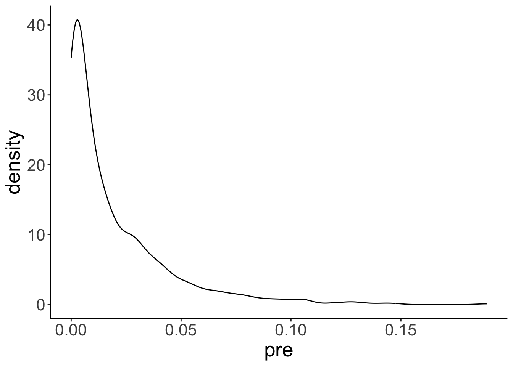
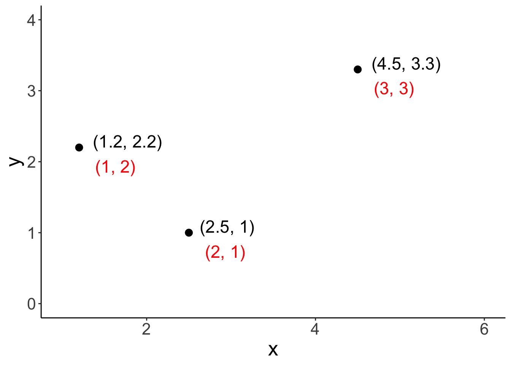
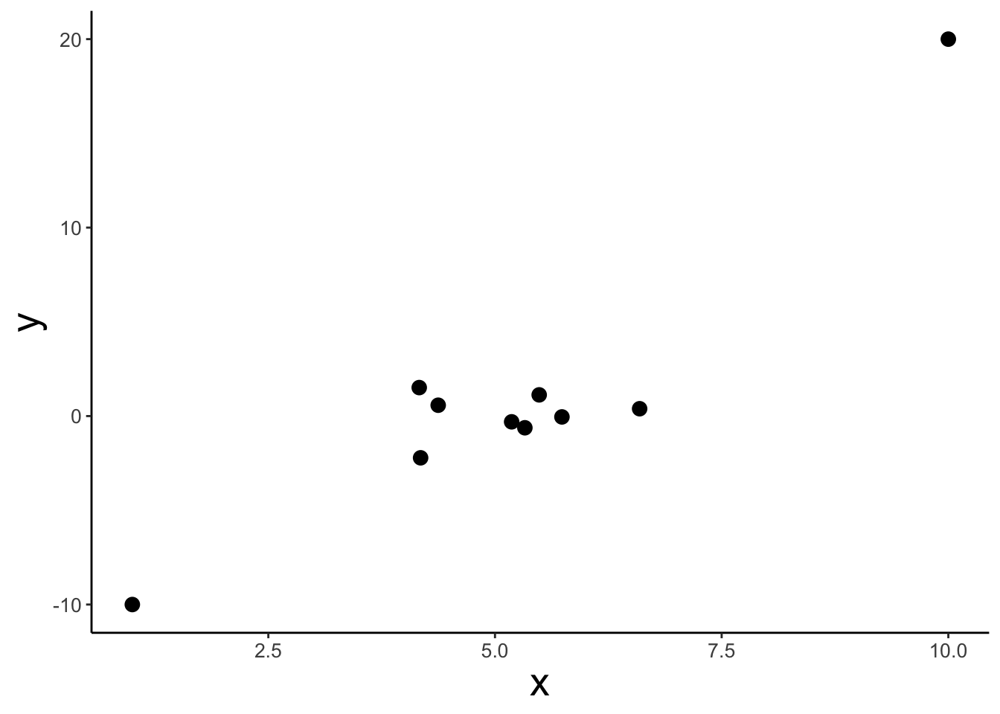
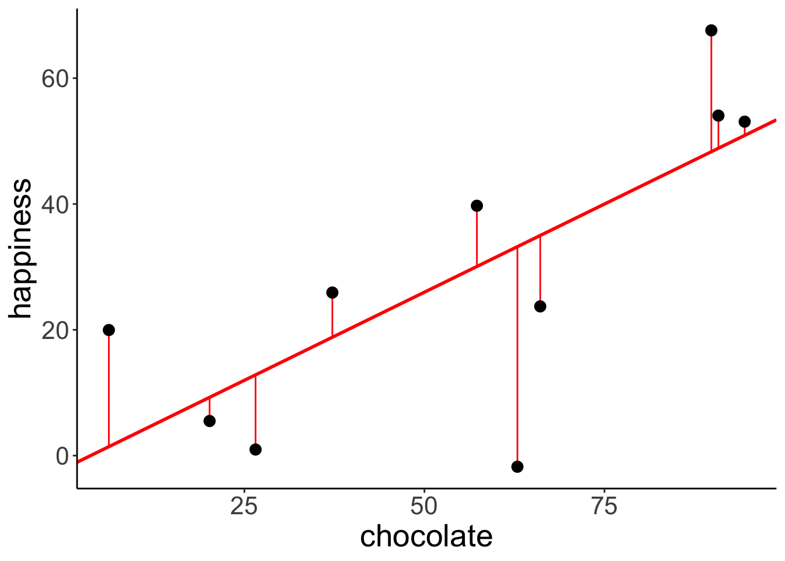
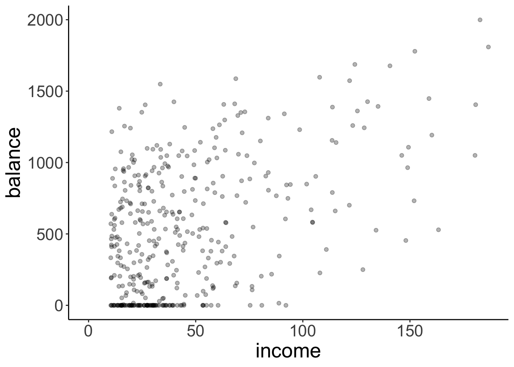
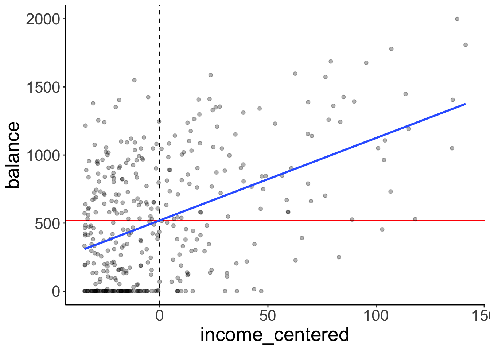
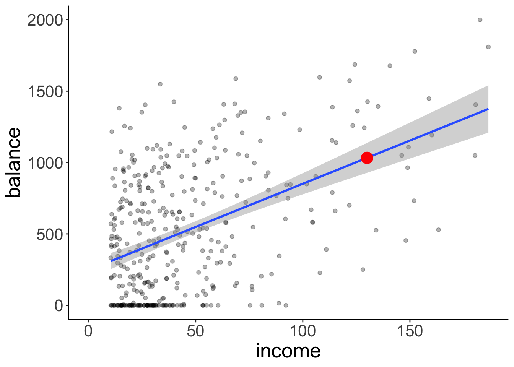

Chapter 10 Linear model 1
10.1 Load packages and set plotting theme
10.2 Correlation
# make example reproducible
set.seed(1)
n_samples = 20
# create correlated data
df.correlation = tibble(x = runif(n_samples, min = 0, max = 100),
y = x + rnorm(n_samples, sd = 15))
# plot the data
ggplot(data = df.correlation,
mapping = aes(x = x,
y = y)) +
geom_point(size = 2) +
labs(x = "chocolate",
y = "happiness")
10.2.0.1 Variance
Variance is the average squared difference between each data point and the mean:
- \(Var(Y) = \frac{\sum_{i = 1}^n(Y_i - \overline Y)^2}{n-1}\)
# make example reproducible
set.seed(1)
# generate random data
df.variance = tibble(x = 1:10,
y = runif(10, min = 0, max = 1))
# plot the data
ggplot(data = df.variance,
mapping = aes(x = x,
y = y)) +
geom_segment(aes(x = x,
xend = x,
y = y,
yend = mean(df.variance$y))) +
geom_point(size = 3) +
geom_hline(yintercept = mean(df.variance$y),
color = "blue") +
theme(axis.text.x = element_blank(),
axis.title.x = element_blank(),
axis.ticks.x = element_blank()
)
10.2.0.2 Covariance
Covariance is defined in the following way:
- \(Cov(X,Y) = \sum_{i=1}^n\frac{(X_i-\overline X)(Y_i-\overline Y)}{n-1}\)
# make example reproducible
set.seed(1)
# generate random data
df.covariance = tibble(x = runif(20, min = 0, max = 1),
y = x + rnorm(x, mean = 0.5, sd = 0.25))
# plot the data
ggplot(df.covariance,
aes(x = x, y = y)) +
geom_point(size = 3) +
theme(axis.text = element_blank(),
axis.title = element_blank(),
axis.ticks = element_blank())
Add lines for \(\overline X\) and \(\overline Y\) to the data:
ggplot(df.covariance,
aes(x = x, y = y)) +
geom_hline(yintercept = mean(df.covariance$y),
color = "red",
size = 1) +
geom_vline(xintercept = mean(df.covariance$x),
color = "red",
size = 1) +
geom_point(size = 3) +
theme(axis.text = element_blank(),
axis.title = element_blank(),
axis.ticks = element_blank())
Illustrate how covariance is computed by drawing the distance to \(\overline X\) and \(\overline Y\) for three data points:
df.plot = df.covariance %>%
mutate(covariance = (x-mean(x)) *( y-mean(y))) %>%
arrange(abs(covariance)) %>%
mutate(color = NA)
mean_xy = c(mean(df.covariance$x), mean(df.covariance$y))
df.plot$color[1] = 1
df.plot$color[10] = 2
df.plot$color[19] = 3
ggplot(df.plot,
aes(x = x, y = y, color = as.factor(color))) +
geom_segment(data = df.plot %>%
filter(color == 1),
mapping = aes(x = x,
xend = mean_xy[1],
y = y,
yend = y),
size = 1) +
geom_segment(data = df.plot %>%
filter(color == 1),
mapping = aes(x = x,
xend = x,
y = y,
yend = mean_xy[2]),
size = 1) +
geom_segment(data = df.plot %>%
filter(color == 2),
mapping = aes(x = x,
xend = mean_xy[1],
y = y,
yend = y),
size = 1) +
geom_segment(data = df.plot %>%
filter(color == 2),
mapping = aes(x = x,
xend = x,
y = y,
yend = mean_xy[2]),
size = 1) +
geom_segment(data = df.plot %>%
filter(color == 3),
mapping = aes(x = x,
xend = mean_xy[1],
y = y,
yend = y),
size = 1) +
geom_segment(data = df.plot %>%
filter(color == 3),
mapping = aes(x = x,
xend = x,
y = y,
yend = mean_xy[2]),
size = 1) +
geom_hline(yintercept = mean_xy[2],
color = "red",
size = 1) +
geom_vline(xintercept = mean_xy[1],
color = "red",
size = 1) +
geom_point(size = 3) +
theme(axis.text = element_blank(),
axis.title = element_blank(),
axis.ticks = element_blank(),
legend.position = "none")
10.2.0.3 Spearman’s rank order correlation
Spearman’s \(\rho\) captures the extent to which the relationship between two variables is monotonic.
# create data frame with data points and ranks
df.ranking = tibble(
x = c(1.2, 2.5, 4.5),
y = c(2.2, 1, 3.3),
label = str_c("(", x, ", ", y, ")"),
x_rank = dense_rank(x),
y_rank = dense_rank(y),
label_rank = str_c("(", x_rank, ", ", y_rank, ")")
)
# plot the data (and show their ranks)
ggplot(df.ranking,
aes(x = x, y = y)) +
geom_point(size = 3) +
geom_text(aes(label = label),
hjust = -0.2,
vjust = 0,
size = 6) +
geom_text(aes(label = label_rank),
hjust = -0.4,
vjust = 2,
size = 6,
color = "red") +
coord_cartesian(xlim = c(1, 6),
ylim = c(0, 4))
Show that Spearman’s \(\rho\) is equivalent to Pearson’s \(r\) applied to ranked data.
# data set
df.spearman = df.correlation %>%
mutate(x_rank = dense_rank(x),
y_rank = dense_rank(y))
# correlation
df.spearman %>%
summarize(r = cor(x, y, method = "pearson"),
spearman = cor(x, y, method = "spearman"),
r_ranks = cor(x_rank, y_rank))## # A tibble: 1 x 3
## r spearman r_ranks
## <dbl> <dbl> <dbl>
## 1 0.851 0.836 0.836# plot
ggplot(df.spearman,
aes(x = x_rank, y = y_rank)) +
geom_point(size = 3) +
scale_x_continuous(breaks = 1:20) +
scale_y_continuous(breaks = 1:20) +
theme(axis.text = element_text(size = 10))
# show some of the data and ranks
df.spearman %>%
head(10) %>%
kable(digits = 2) %>%
kable_styling(bootstrap_options = "striped",
full_width = F)| x | y | x_rank | y_rank |
|---|---|---|---|
| 26.55 | 49.23 | 5 | 10 |
| 37.21 | 43.06 | 6 | 7 |
| 57.29 | 47.97 | 10 | 8 |
| 90.82 | 57.60 | 18 | 11 |
| 20.17 | 37.04 | 3 | 6 |
| 89.84 | 89.16 | 17 | 19 |
| 94.47 | 94.22 | 19 | 20 |
| 66.08 | 80.24 | 12 | 16 |
| 62.91 | 75.23 | 11 | 14 |
| 6.18 | 15.09 | 1 | 2 |
Comparison between \(r\) and \(\rho\) for a given data set:
# data set
df.example = tibble(x = 1:10,
y = c(-10, 2:9, 20)) %>%
mutate(x_rank = dense_rank(x),
y_rank = dense_rank(y))
# correlation
df.example %>%
summarize(r = cor(x, y, method = "pearson"),
spearman = cor(x, y, method = "spearman"),
r_ranks = cor(x_rank, y_rank))## # A tibble: 1 x 3
## r spearman r_ranks
## <dbl> <dbl> <dbl>
## 1 0.878 1.00 1.00# plot
ggplot(df.example,
# aes(x = x_rank, y = y_rank)) + # see the ranked data
aes(x = x, y = y)) + # see the original data
geom_point(size = 3) +
theme(axis.text = element_text(size = 10))
Another example
# make example reproducible
set.seed(1)
# data set
df.example2 = tibble(x = c(1, rnorm(8, mean = 5, sd = 1), 10),
y = c(-10, rnorm(8, sd = 1), 20)) %>%
mutate(x_rank = dense_rank(x),
y_rank = dense_rank(y))
# correlation
df.example2 %>%
summarize(r = cor(x, y, method = "pearson"),
spearman = cor(x, y, method = "spearman"),
r_ranks = cor(x_rank, y_rank))## # A tibble: 1 x 3
## r spearman r_ranks
## <dbl> <dbl> <dbl>
## 1 0.919 0.467 0.467# plot
ggplot(df.example2,
# aes(x = x_rank, y = y_rank)) + # see the ranked data
aes(x = x, y = y)) + # see the original data
geom_point(size = 3) +
theme(axis.text = element_text(size = 10))
10.3 Regression
# make example reproducible
set.seed(1)
# set the sample size
n_samples = 10
# generate correlated data
df.regression = tibble(chocolate = runif(n_samples, min = 0, max = 100),
happiness = chocolate * 0.5 + rnorm(n_samples, sd = 15))
# plot the data
ggplot(data = df.regression,
aes(x = chocolate,
y = happiness)) +
geom_point(size = 3)
10.3.1 Define and fit the models
Define and fit the compact model (Model C): \(Y_i = \beta_0 + \epsilon_i\)
# fit the compact model
lm.compact = lm(happiness ~ 1, data = df.regression)
# store the results of the model fit in a data frame
df.compact = tidy(lm.compact)
# plot the data with model prediction
ggplot(data = df.regression,
aes(x = chocolate,
y = happiness)) +
geom_hline(yintercept = df.compact$estimate,
color = "blue",
size = 1) +
geom_point(size = 3) 
Define and fit the augmented model (Model A): \(Y_i = \beta_0 + \beta_1 X_{1i} + \epsilon_i\)
# fit the augmented model
lm.augmented = lm(happiness ~ chocolate, data = df.regression)
# store the results of the model fit in a data frame
df.augmented = tidy(lm.augmented)
# plot the data with model prediction
ggplot(data = df.regression,
aes(x = chocolate,
y = happiness)) +
geom_abline(intercept = df.augmented$estimate[1],
slope = df.augmented$estimate[2],
color = "red",
size = 1) +
geom_point(size = 3) 
10.3.2 Calculate the sum of squared errors of each model
Illustration of the residuals for the compact model:
# fit the model
lm.compact = lm(happiness ~ 1, data = df.regression)
# store the model information
df.compact_summary = tidy(lm.compact)
# create a data frame that contains the residuals
df.compact_model = augment(lm.compact) %>%
clean_names() %>%
left_join(df.regression)## Joining, by = "happiness"# plot model prediction with residuals
ggplot(data = df.compact_model,
aes(x = chocolate,
y = happiness)) +
geom_hline(yintercept = df.compact_summary$estimate,
color = "blue",
size = 1) +
geom_segment(aes(xend = chocolate,
yend = df.compact_summary$estimate),
color = "blue") +
geom_point(size = 3) 
## # A tibble: 1 x 1
## SSE
## <dbl>
## 1 5215.Illustration of the residuals for the augmented model:
# fit the model
lm.augmented = lm(happiness ~ chocolate, data = df.regression)
# store the model information
df.augmented_summary = tidy(lm.augmented)
# create a data frame that contains the residuals
df.augmented_model = augment(lm.augmented) %>%
clean_names() %>%
left_join(df.regression)## Joining, by = c("happiness", "chocolate")# plot model prediction with residuals
ggplot(data = df.augmented_model,
aes(x = chocolate,
y = happiness)) +
geom_abline(intercept = df.augmented_summary$estimate[1],
slope = df.augmented_summary$estimate[2],
color = "red",
size = 1) +
geom_segment(aes(xend = chocolate,
yend = fitted),
color = "red") +
geom_point(size = 3) 
## # A tibble: 1 x 1
## SSE
## <dbl>
## 1 2397.Calculate the F-test to determine whether PRE is significant.
pc = 1 # number of parameters in the compact model
pa = 2 # number of parameters in the augmented model
n = 10 # number of observations
# SSE of the compact model
sse_compact = df.compact_model %>%
summarize(SSE = sum(resid^2))
# SSE of the augmented model
sse_augmented = df.augmented_model %>%
summarize(SSE = sum(resid^2))
# Proportional reduction of error
pre = as.numeric(1 - (sse_augmented/sse_compact))
# F-statistic
f = (pre/(pa-pc))/((1-pre)/(n-pa))
# p-value
p_value = 1-pf(f, df1 = pa-pc, df2 = n-pa)
print(p_value)## [1] 0.01542156F-distribution with a red line indicating the calculated F-statistic.
ggplot(data = tibble(x = c(0, 10)),
mapping = aes(x = x)) +
stat_function(fun = "df",
args = list(df1 = pa-pc,
df2 = n-pa),
size = 1) +
geom_vline(xintercept = f,
color = "red",
size = 1)
The short version of doing what we did above :)
## Analysis of Variance Table
##
## Model 1: happiness ~ 1
## Model 2: happiness ~ chocolate
## Res.Df RSS Df Sum of Sq F Pr(>F)
## 1 9 5215.0
## 2 8 2396.9 1 2818.1 9.4055 0.01542 *
## ---
## Signif. codes: 0 '***' 0.001 '**' 0.01 '*' 0.05 '.' 0.1 ' ' 110.4 Credit example
Let’s load the credit card data:
## Warning: Missing column names filled in: 'X1' [1]## Parsed with column specification:
## cols(
## X1 = col_double(),
## Income = col_double(),
## Limit = col_double(),
## Rating = col_double(),
## Cards = col_double(),
## Age = col_double(),
## Education = col_double(),
## Gender = col_character(),
## Student = col_character(),
## Married = col_character(),
## Ethnicity = col_character(),
## Balance = col_double()
## )Here is a short description of the variables:
| variable | description |
|---|---|
| income | in thousand dollars |
| limit | credit limit |
| rating | credit rating |
| cards | number of credit cards |
| age | in years |
| education | years of education |
| gender | male or female |
| student | student or not |
| married | married or not |
| ethnicity | African American, Asian, Caucasian |
| balance | average credit card debt |
Scatterplot of the relationship between income and balance.
ggplot(data = df.credit,
mapping = aes(x = income,
y = balance)) +
geom_point(alpha = 0.3) +
coord_cartesian(xlim = c(0, max(df.credit$income)))
To make the model intercept interpretable, we can center the predictor variable by subtracting the mean from each value.
df.plot = df.credit %>%
mutate(income_centered = income - mean(income)) %>%
select(balance, income, income_centered)
fit = lm(balance ~ 1 + income_centered, data = df.plot)
ggplot(data = df.plot,
mapping = aes(x = income_centered,
y = balance)) +
geom_vline(xintercept = 0,
linetype = 2,
color = "black") +
geom_hline(yintercept = mean(df.plot$balance),
color = "red") +
geom_point(alpha = 0.3) +
geom_smooth(method = "lm", se = F) +
scale_color_manual(values = c("black", "red"))
Let’s fit the model and take a look at the model summary:
##
## Call:
## lm(formula = balance ~ 1 + income, data = df.credit)
##
## Residuals:
## Min 1Q Median 3Q Max
## -803.64 -348.99 -54.42 331.75 1100.25
##
## Coefficients:
## Estimate Std. Error t value Pr(>|t|)
## (Intercept) 246.5148 33.1993 7.425 6.9e-13 ***
## income 6.0484 0.5794 10.440 < 2e-16 ***
## ---
## Signif. codes: 0 '***' 0.001 '**' 0.01 '*' 0.05 '.' 0.1 ' ' 1
##
## Residual standard error: 407.9 on 398 degrees of freedom
## Multiple R-squared: 0.215, Adjusted R-squared: 0.213
## F-statistic: 109 on 1 and 398 DF, p-value: < 2.2e-16Here, I double check that I understand how the statistics about the residuals are calculated that the model summary gives me.
fit %>%
augment() %>%
clean_names() %>%
summarize(min = min(resid),
first_quantile = quantile(resid, 0.25),
median = median(resid),
third_quantile = quantile(resid, 0.75),
max = max(resid),
rmse = sqrt(mean(resid^2)))## # A tibble: 1 x 6
## min first_quantile median third_quantile max rmse
## <dbl> <dbl> <dbl> <dbl> <dbl> <dbl>
## 1 -804. -349. -54.4 332. 1100. 407.Here is a plot of the residuals. Residual plots are important for checking whether any of the linear model assumptions have been violated.
fit %>%
augment() %>%
clean_names() %>%
ggplot(aes(x = fitted,
y = resid)) +
geom_hline(yintercept = 0,
color = "blue") +
geom_point(alpha = 0.3)We can use the glance() function from the broom package to print out model statistics.
fit %>%
glance() %>%
kable(digits = 2) %>%
kable_styling(bootstrap_options = "striped",
full_width = F)| r.squared | adj.r.squared | sigma | statistic | p.value | df | logLik | AIC | BIC | deviance | df.residual |
|---|---|---|---|---|---|---|---|---|---|---|
| 0.21 | 0.21 | 407.86 | 108.99 | 0 | 2 | -2970.95 | 5947.89 | 5959.87 | 66208745 | 398 |
Let’s test whether income is a significant predictor of balance in the credit data set.
# fitting the compact model
fit_c = lm(formula = balance ~ 1,
data = df.credit)
# fitting the augmented model
fit_a = lm(formula = balance ~ 1 + income,
data = df.credit)
# run the F test
anova(fit_c, fit_a)## Analysis of Variance Table
##
## Model 1: balance ~ 1
## Model 2: balance ~ 1 + income
## Res.Df RSS Df Sum of Sq F Pr(>F)
## 1 399 84339912
## 2 398 66208745 1 18131167 108.99 < 2.2e-16 ***
## ---
## Signif. codes: 0 '***' 0.001 '**' 0.01 '*' 0.05 '.' 0.1 ' ' 1Let’s print out the paramters of the augmented model with confidence intervals:
fit_a %>%
tidy(conf.int = T) %>%
kable(digits = 2) %>%
kable_styling(bootstrap_options = "striped",
full_width = F)| term | estimate | std.error | statistic | p.value | conf.low | conf.high |
|---|---|---|---|---|---|---|
| (Intercept) | 246.51 | 33.20 | 7.43 | 0 | 181.25 | 311.78 |
| income | 6.05 | 0.58 | 10.44 | 0 | 4.91 | 7.19 |
We can use augment() with the newdata = argument to get predictions about new data from our fitted model:
## # A tibble: 1 x 3
## income .fitted .se.fit
## <dbl> <dbl> <dbl>
## 1 130 1033. 53.2Here is a plot of the model with confidence interval (that captures our uncertainty in the intercept and slope of the model) and the predicted balance value for an income of 130:
ggplot(data = df.credit,
mapping = aes(x = income,
y = balance)) +
geom_point(alpha = 0.3) +
geom_smooth(method = "lm") +
annotate(geom = "point",
color = "red",
size = 5,
x = 130,
y = predict(fit, newdata = tibble(income = 130))) +
coord_cartesian(xlim = c(0, max(df.credit$income)))
Finally, let’s take a look at how the residuals are distributed.
# get the residuals
df.plot = fit_a %>%
augment() %>%
clean_names()
# plot a quantile-quantile plot
ggplot(df.plot, aes(sample = resid)) +
geom_qq_line() +
geom_qq()

Not quite as normally distributed as we would hope. We learn what to do if some of the assumptions of the linear model are violated later in class.
10.5 Additional resources
10.5.1 Datacamp
10.6 Session info
## R version 3.6.2 (2019-12-12)
## Platform: x86_64-apple-darwin15.6.0 (64-bit)
## Running under: macOS Mojave 10.14.6
##
## Matrix products: default
## BLAS: /Library/Frameworks/R.framework/Versions/3.6/Resources/lib/libRblas.0.dylib
## LAPACK: /Library/Frameworks/R.framework/Versions/3.6/Resources/lib/libRlapack.dylib
##
## locale:
## [1] en_US.UTF-8/en_US.UTF-8/en_US.UTF-8/C/en_US.UTF-8/en_US.UTF-8
##
## attached base packages:
## [1] stats graphics grDevices utils datasets methods base
##
## other attached packages:
## [1] forcats_0.4.0 stringr_1.4.0 dplyr_0.8.3 purrr_0.3.3
## [5] readr_1.3.1 tidyr_1.0.0 tibble_2.1.3 ggplot2_3.2.1
## [9] tidyverse_1.3.0 broom_0.5.3 janitor_1.2.0 kableExtra_1.1.0
## [13] knitr_1.26
##
## loaded via a namespace (and not attached):
## [1] tidyselect_0.2.5 xfun_0.11 haven_2.2.0 lattice_0.20-38
## [5] snakecase_0.11.0 colorspace_1.4-1 vctrs_0.2.1 generics_0.0.2
## [9] htmltools_0.4.0 viridisLite_0.3.0 yaml_2.2.0 utf8_1.1.4
## [13] rlang_0.4.2 pillar_1.4.3 withr_2.1.2 glue_1.3.1
## [17] DBI_1.1.0 dbplyr_1.4.2 readxl_1.3.1 modelr_0.1.5
## [21] lifecycle_0.1.0 cellranger_1.1.0 munsell_0.5.0 gtable_0.3.0
## [25] rvest_0.3.5 evaluate_0.14 labeling_0.3 fansi_0.4.0
## [29] highr_0.8 Rcpp_1.0.3 scales_1.1.0 backports_1.1.5
## [33] webshot_0.5.2 jsonlite_1.6 farver_2.0.1 fs_1.3.1
## [37] hms_0.5.2 digest_0.6.23 stringi_1.4.3 bookdown_0.16
## [41] grid_3.6.2 cli_2.0.0 tools_3.6.2 magrittr_1.5
## [45] lazyeval_0.2.2 crayon_1.3.4 pkgconfig_2.0.3 zeallot_0.1.0
## [49] xml2_1.2.2 reprex_0.3.0 lubridate_1.7.4 assertthat_0.2.1
## [53] rmarkdown_2.0 httr_1.4.1 rstudioapi_0.10 R6_2.4.1
## [57] nlme_3.1-142 compiler_3.6.2